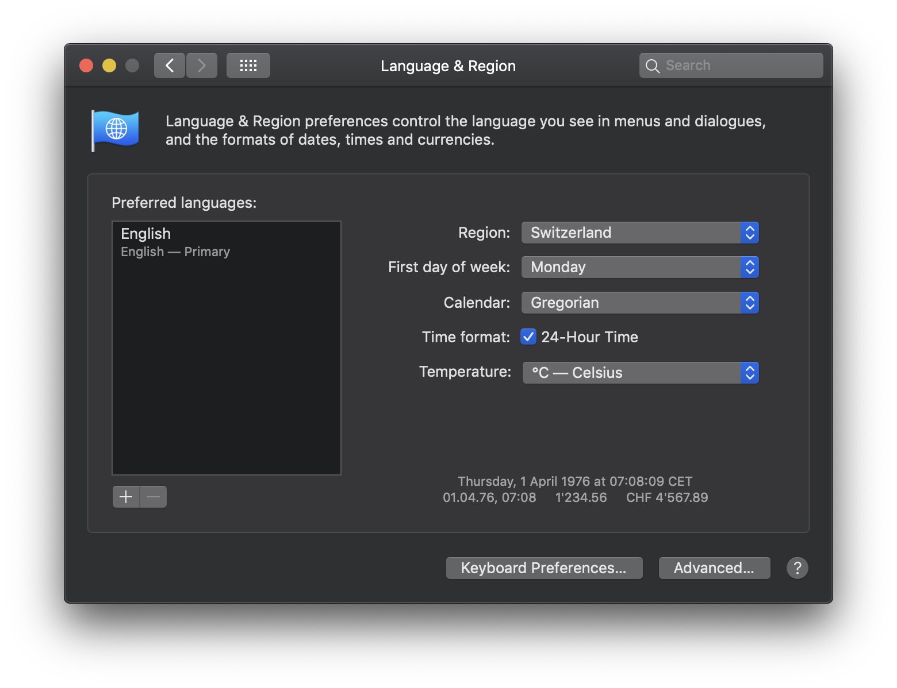

Lokalisierung · Internationalisierung
Intro
Lokalisierung (l10n)
l10n
Lokalisierung wird oft als l10n geschrieben. 10 gibt dabei die Anzahl der Buchstaben zwischen l und n im englischen Wort «localization» ist. Gesprochen wird jedoch von Lokalisierung/localization.
Mit «Lokalisierung» meint man den Vorgang, wie man Content und Produkte an einen Kulturkreis anpasst. Dazu können ganz verschiedene Anpassungen nötig sein.
Beispiele für Anpassungen bei der Lokalisierung:
- Sprache
- Wähnrung
- Kulturelle Referenzen
- Farben
- Zeitangaben
Internationalisierung (i18n)
l10n
Internationalisierung wird oft als i18n geschrieben. 18 gibt dabei die Anzahl der Buchstaben zwischen i und n im englischen Wort «internationalization» ist. Gesprochen wird jedoch von Internationalisierung/internationalization.
Bei der «Internationalisierung» geht es darum ein System oder Produkt so zu gestalten, dass später eine Lokalisierung möglich ist.
Einige Beispiele für Internationalisierung
- Dimensionen ermöglichen – Ein System so bauen, dass mehrere Dimensionen – wie Sprache oder Land – möglich wird
- Fallbacks – Was geschieht, wenn ich nicht alle Inhalte in allen Dimensionen habe?
- Templating – Inhalt und Programmcode von einander abspalten. Inhalt sollte unabhängig vom Prgorammcode editiert werden können
- Views – Der selbe Inhalt sollte je nach Kulturkreis anders angezeigt werden. Beispiel Datum.
Text
Sprache, Land und Kultur
Text ist für die Lokalisierung meist in die jeweilige Sprache anzupassen. Jedoch genügt eine reine Sprachliche Anpassung nicht immer. So kann zum Beispiel in mehreren Ländern die selbe Sprache gelten aber andere Währungen. Somit ist eine weitere Dimension zu Pflegen. Auch lokale Referenzen und Vergleiche werden nicht überall gleich verstanden.
Dimensionen
Beispiel einer Website um Flüge zu buchen. Es gibt drei Dimensionen der Lokalisierung:
- Region
- Sprache
- Währung

Individualisierung
Beispiel zur Konfiguration des MacOS 10.14 Betriebsystem

Unicode
Vorläufer
- Diverse Standards für verschiedene Betriebsysteme und Sprachregionen
- ASCII diente für die ersten 127 Zeichen des späteren Unicode
Unicode Version 1
(Oktober 1991)
7161 Zeichen für insgesammt 24 Schriftsysteme wurden standardisiert.
Unicode Version 12
(März 2018)
137 993 Zeichen für insgesammt 150 Schriftsysteme wurden standardisiert.
Das Unicode Konsortium wurde geschaffen um eine Standardisierung zu erreichen, welcher Wert/Zeichencode (Codepoint) welchem Schriftzeichen (Glyph) entspricht. Die erste Version
Beispiel
- Wert 65 entspricht einem lateinischen A (Grossbuchstabe)
- Notation meist in Hex
U+0041 - In HTML in DEC
Aoder HEXAgeschrieben. - Unicode Eintrag für A
Encoding
Beim Encoding wird festgehalten, wie der Codepoint abgespeichert wird.
Verbreitete Encodings für Unicode
- UTF-8
- UTF-16 (nur verwenden, wenn UTF-8 nicht möglich)
- UTF-32 (nur verwenden, wenn UTF-8 nicht möglich)
Beispiel
- A = BIN
01000001in UTF-8 Encoding
Falsches Encoding
Noto
Der Google-Font Noto hat das Ziel alle Zeichen des Unicode-Standards in einem Font zugänglich zu machen. Der Name des Fonts sthet für für «No Tofu». Wobei Tofu hier den «replacement character» □ meint.
Wenn das Zeichen korrekt Encoded ist, jedoch der Font kein Glyph für das Zeichen hat, so werden so genannte «replacement characters» gezeigt.
Übersetzungen
Übersetzungen werden meist gebraucht um eine verschriftliche Sprache in eine andere zu überführen. Dies kann heute durch Menschen oder durch Maschinen gemacht werden. Maschinelle übersetzungen sollten nur dort gebraucht werden, wo es keine Möglichkeit gibt einen Menschen mit dieser Aufgabe zu betrauen, da maschinelle Übersetzungen noch immer Fehlerhaft sind.
Schreibweise
Je nach Region können sich einzelne Wörter oder Schreibweisen durchgesezt haben. Dies ist bei einer Lokalisierung zwinden zu berücksichtigen. Nachfolgend einige Beispiele.
ß oder ss
UK oder US
Vergleiche & Bezüge
Vergleiche sind sehr individuell für eine Kulturform und können nicht global verstanden werden. Sie unterscheiden Sich sogar innerhalb einer Kulturform zum gleich Massiv.
Grössenvergleiche
Oft in populären Medien wird zum Veranschaulichen eine nicht SI-Norm verwendet.
Saarland
In Medien aus Deutschland oft mit der «Flächeneinheit» Saarland ein Vergleich gemacht. Im Nachbarland Schweiz ist hingengen nicht einmal allen Menschen klar, dass Saarland ein Bundesland in Deutschland ist und sie haben kein Gefühl für dessen grösse.
Vorwissen
Je nach Publikum und Alter haben die Konsumenten eine andere Vorbildung und gewisse Bezüge funktionieren nicht mehr.
Geschichte
Meist sind geschichtliche Referenzen nur dann zu verstehen, wenn Sie sehr bekannt sind oder in der eigenen Lebenszeit erlebt wurden.
Typografie
Die typografischen Regeln ändern sich von Land zu Land. Ein Beispiel sind Anführungs- und Schlusszeichen. Aber auch sonstige Regeln können in verschiedenen Ländern anders interpretiert werden.
Schweiz
In der Schweiz werden die Anführungszeichen mit den so genannten Guillemets geschrieben:
Kommen innerhalb der Anführungszeichen weitere Anführungen vor, so kommen die einfachen Anführungszeichen zur Anwendung:
Deutschland
Frankreich
Englisch
In der englischen Sprache kommen die «Double quotes» zum Einsatz.
oder aber auch die «Single quotes»
Laufrichtung des Textes
Je nach Sprache kann der Text in ganz verschiedene richtungen laufen. In den westlichen Sprachen wird häufig von links nach rechts gelesen. Entsprechend der Leserichtung ist auch die Abfolge der Elemente zu sortieren.
left to right (ltr) und right to left (rtl)
Häufig wird von ltr oder rtl Sprachen gesprochen. Diese Abkürzungen stehen für die Anfangsbuchstaben des englischen «left to right» und «right to left».
vertikale Laufrichtungen
In heutigen Browsern lassen sich auch vertikale Laufrichtungen realisieren. Jedoch unterstützt nicht jeder Browser jeden Modus.
Beispiel von MDN
| CSS-Wert | Vertikales Schriftystem | Horizontales Schriftystem | Gemischte Schriftysteme |
|---|---|---|---|
| horizontal-tb | 我家没有电脑。 | Example text | 1994年に至っては |
| vertical-lr | 我家没有电脑。 | Example text | 1994年に至っては |
| vertical-rl | 我家没有电脑。 | Example text | 1994年に至っては |
| sideways-lr | 我家没有电脑。 | Example text | 1994年に至っては |
| sideways-rl | 我家没有电脑。 | Example text | 1994年に至っては |
Sortierung
Für die Sortierung von Einträgen gibt es in ganz verschiedenen Kulturkreisen verschiedene Regeln. Sortierungen müssen von technischen Systemen unterstütz werden, da diese meist Automatisch gemacht werden.
Deutscher Sprachraum
Beispiele aus Wikipedia
Im deutschen Sprachraum alleine gibt es bereits drei Sortierungen.
- DIN 5007 Variante 1 = Lexikon
- DIN 5007 Variante 2 = Telefonbuch
- Österreichische Sortierung (Telefonbuch)
DIN 5007 Variante 1
- Göbel
- Goethe
- Goldmann
- Göthe
- Götz
ö = o
DIN 5007 Variante 1
- Göbel
- Goethe
- Göthe
- Götz
- Goldmann
ö = oe
DIN 5007 Variante 1
- Goethe
- Goldmann
- Göbel
- Göthe
- Götz
ö folgt auf o
Personennamen & Titel
In vielen westlichen Ländern werden akademische Grade oder Auszeichnungen – wie zum Beispiel Doktor oder Hofrat (in Östereich gebräuchlich für höhere Beamte) – im Namen geführt. Da gewise Personen einen Wert darauf legen, sollte dies jeweils berücksichtigt werden.
In Österreich gibt es zum Beispiel über 1500 Titel die per Gesetz geregelt sind.

Beispiel der Wiener Staatsoper
Autor
Stefan Huber
sh@signalwerk.ch
+41 78 744 37 38
Dokumentgeschichte
März 2019: Erstellung
Weiterführende Informationen
- Zeichencode Standard
- Sortierung (→ siehe auch Wikipedia)
- Normalisierung – ß = ss
- Quelle für Lokalisierung
- Typographizer
- W3C · Internationalization techniques: Authoring HTML & CSS